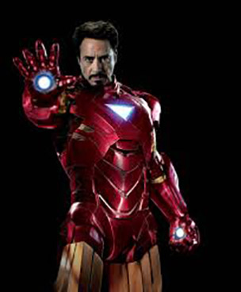
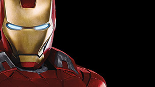

Iron Man is a fictional character, a superhero that appears in comic books published by Marvel Comics. The character was created by writer-editor Stan Lee, developed by scripter Larry Lieber, and designed by artists Don Heck and Jack Kirby.
An American billionaire playboy, industrialist, and ingenious engineer,Tony Stark suffers a severe chest injury during a kidnapping in which his captors attempt to force him to build a weapon of mass destruction. He instead creates a powered suit of armor to save his life and escape captivity. He later uses the suit and successive versions to protect the world as Iron Man. Through his corporation ― Star Industries― Tony has created many military weapons, some of which, along with other technological devices of his making, have been integrated into his suit, helping him fight crime. Initially, Iron Man was a vehicle for Stan Lee to explore Cold War themes, particularly the role of American technology and business in the fight against communism. Subsequent re-imaginings of Iron Man have transitioned from Cold War themes to contemporary concerns, such as corporate crime and terrorism.
Throughout most of the character's publication history, Iron Man has been a founding member of the superhero team the Avengers and has been featured in several incarnations of his own various comic book series. Iron Man has been adapted for several animated TV shows and films. The character is portrayed by Robert Downey, Jr. in the live action film Iron Man (2008), which was a critical and box office success. Downey, who received much acclaim for his performance, reprised the role in two Iron Man sequels and The Avengers (2012), and will do so again in Avengers: Age of Ultron (2015). Iron Man was ranked 12th on IGN's Top 100 Comic Book Heroes in 2011
Publication
Marvel Comics
Created By